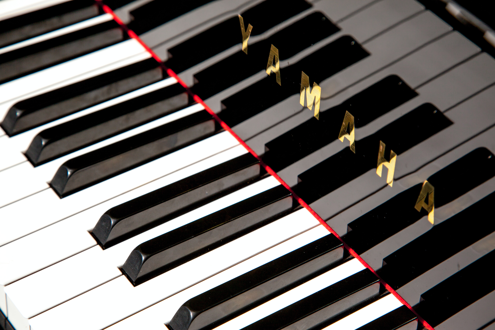

Top 10 Benefits of Playing Piano
During Covid-19

Today’s world is vastly different with COVID-19. People are still trying to adjust to the new normal.
So, while many countries are taking preventative measures and people are finding they are spending more time at home,
here are 10 benefits of playing the piano during COVID-19.
...
A study by E. Glenn Schellenberg, of the University of Toronto at Mississauga shows that taking music lessons such as piano lessons actually increased IQ. And who does not want to be smarter? The study stated “music lessons, taught individually or in small groups, may provide additional boosts in IQ because they are school-like but still enjoyable. Moreover, music lessons involve a multiplicity of experiences that could generate improvement in a wide range of abilities.” Playing the piano is unique because studies show that it uses both hemispheres of the brain, the right and left side. This means that people who play the piano are likely to be more well-rounded. It also encourages independent learning and improves your capacity to be a self-starter. With the challenges of COVID-19, businesses of all sizes and people from all stages of life have to adapt to changing situations quickly. To succeed and thrive, having a varied skillset is an advantage in all facets of your life.
2. Improved Fine Motor Skills
Learning to play the piano improves fine motor skills because it requires dexterity in both the right hand and the left hand equally, as well as both the left and right foot. With improved dexterity comes increased speed. This is a valuable advantage that is a transferrable skill to all industries, and it particularly comes in handy during COVID-19. We are all probably spending more time typing on a keyboard replying to emails for work, doing homework assignments for school virtually, texting and messaging on various social media platforms to keep up to date with the latest from work, school, family and friends.
3. Playing Piano Music Brings Joy
Music is a universal language that is celebrated and brings joy in all cultures around the world. It brings people together in times of celebration or everyday activities. It is understood and appreciated by everyone no matter where they come from or what language they speak. Even though there are restrictions on travelling the globe and attending in-person events, there are no restrictions when it comes to learning piano music from the comfort and convenience of your home online. It is versatile because you can play your favourite popular artist, movie or television soundtrack music by yourself. Or, through videoconferencing and the magic of technology, you can even play music with other people in a duet, trio, quartet or even groups as large as a band or orchestra. During COVID-19, it is a wonderful form of entertainment that comes with no risks and even fights COVID fatigue. Playing music for others, whether it’s their favorite song or composition of their favorite artist, can bring joy to everyone from the comfort of their home. You can even post videos to YouTube and share them with friends and family.
4. Playing Piano Increases Quality of Life
Who knew, something as simple as playing piano increases your quality of life? An activity that simultaneously exercises the body and the mind, a study of participants demonstrated an increased quality of life both psychologically and physically. An all-natural fountain of youth, playing the piano improves mood and strengthens the muscles in your hands, arms and core in a fun-filled manner. Now with the coronavirus, people are looking for ways to boost their health and maximize their quality of life. And what better way than an activity that you can make a part of your everyday life that may even turn back the clock.
5. Playing Piano Music Protects Memory, Hearing and Brain Processing
Memory, hearing and brain processing are an important part of daily life and navigating the challenges of COVID-19. Learning to play the piano strengthens your memory recall and focus. Increasing your focus will help with the many everyday tasks that you do. There are several cognitive skills required to play a piano piece successfully such as muscle memory, pattern recognition, hearing acuity and rapid brain processing. Firstly, muscle memory makes it easier for your hands to find where the notes are on the piano keyboard. Secondly, pattern recognition groups music notes together so you can anticipate and prepare for the notes that are coming ahead instead of reading each note one by one. Thirdly, hearing acuity allows you to hear different notes and pitches, and teaches a person to expand their hearing to a greater range of pitches including extremely high and extremely low notes. Lastly, rapid brain processing helps the musician concentrate on optimizing the performance aspect of music, delivering the emotion of the piano piece instead of just its technical aspects. When you become a piano player, you can train your brain to process information quickly much like a computer with all its processing power.
6. Increased Task Performance Efficiency
Every time you sit down to play the piano you are essentially a multi-tasking champion. Since COVID-19, many people now are finding that they are multi-tasking even more because now the home has become more than just a home. For some, the home is now their office or main place of business, the children’s school, the new workout place and the entertainment place. Some people are working from home more, while watching the kids, and replying to emails while preparing meals. Playing the piano is like multi-tasking because both of your hands are playing different notes with different rhythms. Sometimes you also have to use both your right and your left foot as well if the piano piece requires the use of a pedal. So really many pianists have compared this to driving a standard car with a shift stick. If your body parts can move independently of one another at the same time, you will see that this skill also applies to everything else that you do increasing task performance. Now you can binge-watch your favourite TV shows, talk on the phone and work all at the same time.
7. Increased Creativity
Playing the piano and learning new songs increases creativity. Everyone may play the same song but no one person performs it in exactly the same way every single time. Everyone brings their own interpretation of the music and expresses themselves in a unique way. In a world that is increasingly dominated by computers and automation, creativity is uniquely human and is a trait that will always be needed and valued. It is also a much needed skill when you encounter obstacles at work, school or in life because it teaches you to think outside-the-box to solve what may appear to be an otherwise unsolvable problem. During COVID-19 there are many unexpected challenges that we are all encountering and it takes creativity to tackle them.
8. Improved Reading Skills
Learning the piano improves reading skills because most pianists do not just learn one song. They generally learn several different songs. The more songs they learn, the faster their reading skills in music become and the faster they can translate those skills to the piano keyboard. Of course, this reading of new musical material also translates to being able to read and scan words on a written page even faster. Reading faster speeds up learning, making it easier to understand new concepts whether at school, work or everyday life. This is necessary during COVID-19 when new facts are always emerging and we must learn quickly to understand how best to respond to them.
Musicians are constantly scanning sheet music. In order to make the song sound smooth, there must not be any long pauses taken to find the correct note on the piano keyboard. To do this, their hands must anticipate the location where they are required to play next by reading ahead on the sheet music. This is similar to how GPS directions are given prior to the street intersection to indicate where a turn must be taken. Learning the piano is a great instrument to begin with at every stage in life because you can start learning as soon as you know your numbers from 1 to 10 and the alphabet.
Reading piano sheet music requires learning both the bass clef and the treble clef, and is the basis for learning many other instruments. So if you or your child wants to learn other wind instruments in preparation for music class and playing in the school band, you can easily transfer those skills to reading music for an instrument like the flute which is written in only the treble clef.
9. Increased Hand Eye Coordination Skills
Hand eye coordination skills are prized for athletes in sports, physically demanding jobs and every day activities. Playing the piano increases hand eye coordination skills because the sheet music is at eye level, yet the hands are lower on the keyboard. A musician must read the sheet music and then translate that note that they read to both of their hands and often even both their right and left foot if they are playing a piece with a pedal. This all improves reaction time, and responding quickly is more important than ever during COVID-19.
10. Reduces Stress and Anxiety
Finally, the benefit of playing the piano is that it reduces stress and anxiety, and increases resilience which is necessary during COVID-19. Playing music and making music is fun. It is a way to express your emotions through song and it brings out the artist in you. By immersing yourself in music you keep your spirits high and those around you whether it be family or friends.
Especially now, during COVID-19 it’s important to create beauty in your life and to share it with others and what a wonderful way of doing this by playing the piano.